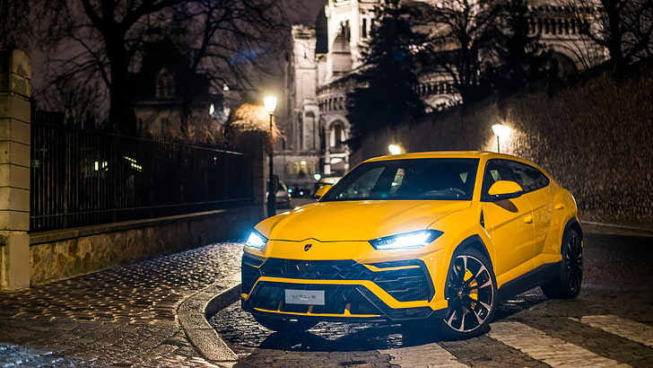

Luxury Car Rentals
Bently Flying Spur
Rolls Royce Phantom

The Rolls-Royce Phantom is a luxury automobile produced by Rolls-Royce Motor Cars, a subsidiary of the German company BMW AG. The Phantom is known for its opulence, craftsmanship, and attention to detail. As of my last knowledge update in January 2022, the Rolls-Royce Phantom VIII was the latest iteration. Key features of the Rolls-Royce Phantom include: Design: The Phantom features a classic, elegant design with a prominent grille, iconic Spirit of Ecstasy mascot, and a long hood. Interior: The interior of the Phantom is lavishly appointed with high-quality materials such as leather, wood veneer, and metal accents. The cabin is designed to provide the utmost comfort and luxury for its occupants. Technology: The Phantom is equipped with the latest automotive technology, including advanced infotainment systems, cutting-edge safety features, and customizable options for the discerning buyer. Performance: Despite its focus on luxury, the Phantom offers powerful performance with a V12 engine that delivers smooth and refined power. Customization: Rolls-Royce is well-known for its bespoke options, allowing customers to personalize various aspects of their vehicles.
Lamborgini Urus
The Lamborghini Urus is a high-performance luxury SUV produced by the Italian automaker Lamborghini. It represents Lamborghini's entry into the SUV market and is known for its powerful performance, distinctive styling, and advanced technology. Here are some key features of the Lamborghini Urus: Design: The Urus features Lamborghini's signature design language, with sharp lines, aggressive angles, and a low-slung stance. Despite being an SUV, it maintains the brand's characteristic supercar aesthetics. Engine: One of the most notable aspects of the Urus is its powerful engine. It is typically equipped with a twin-turbocharged 4.0-liter V8 engine that produces a substantial amount of horsepower, contributing to its impressive performance capabilities. Performance: The Urus is designed to offer sports car-like performance in an SUV form. It can accelerate from 0 to 60 mph in a very short time, making it one of the fastest SUVs on the market. Interior: Inside, the Urus boasts a luxurious and sporty interior with high-quality materials, advanced technology features, and a driver-centric cockpit. It offers a blend of comfort and performance-focused design. Driving Dynamics: The Urus incorporates advanced suspension systems, all-wheel drive, and various driving modes to provide a dynamic driving experience. It can handle a variety of terrains and driving conditions. Customization: Like other Lamborghini models, the Urus offers a range of customization options, allowing buyers to personalize their vehicles according to their preferences.